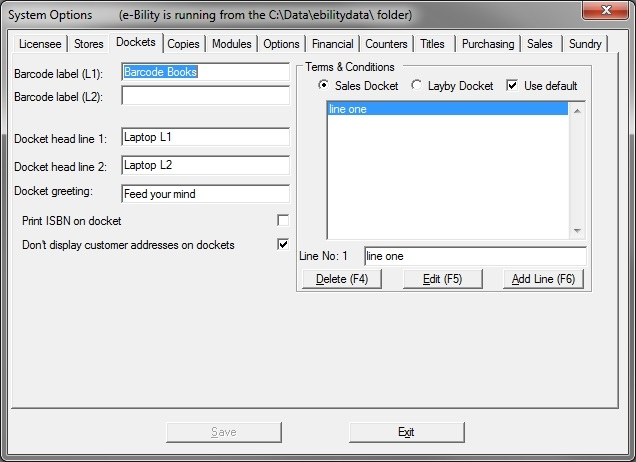

The docket and label printing options are displayed here. When printing reports and forms in Bookscan, the Windows default printer is used. However for barcode labels, dockets, tickets and carton labels, Bookscan prints direct to the printer, bypassing Windows. On this tab, Bookscan is configured to print to these printers.

Barcode label (L1) & Barcode label (L1)
In these two fields, you can set lines to print out at the bottom of each barcode label. Usually the company name is entered on the first line. Note that there may not be sufficient room for the second line on smaller labels.
Docket head line 1 & Docket head line 2
2 lines that will print at the top of the docket. Usually store name and suburb or town.
Docket Greeting
Farewell that is printed on the bottom of the docket.
Print ISBN on docket
The ISBN (code) of items will print on the sales docket underneath the Title.
Don't display customer addresses
This checkbox is used to suppress the printing of customer addresses on sales dockets.
Terms & conditions
Sales
You can create a text file listing your sales terms and conditions e.g. your refund policy. This will print on your cash sales docket just before the docket footer.
Layby
You can also create another text file to replace the default layby conditions with your own conditions. To use this text file in place of the default terms, uncheck the Use Default check box. The text files can be as long as you want.
To create a terms & conditions text file:
| · | Select either the Sales Docket or Layby Docket radio button.
|
| · | Click on the Add Line (F6) button. The Line field will be enabled and cursor will move there.
|
| · | Enter the first line of your text file (e.g. REFUND POLICY) and click the Save Line (F6) button.
|
| · | Keep typing and saving each line. Press the Escape (Esc) key when finished.
|
To edit a file:
| · | Click on the line you want to edit. The line will be displayed in the Line field.
|
| · | Click on the Edit Line (F5) button. The Line field will be enabled and cursor will move there.
|
| · | Type you changes and click the Save Line (F6) button.
|
For layby terms, you can click on the Copy Default (F4) button (only visible if no layby terms have been entered). The default terms will be copied into the text box where you can edit them before saving them as your own terms.